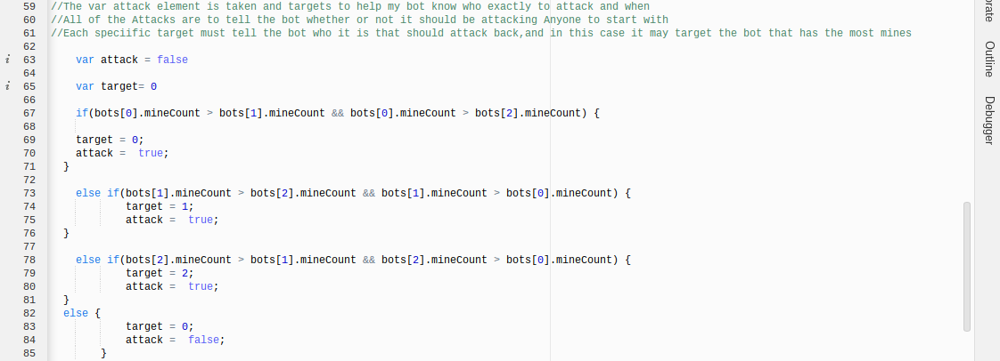
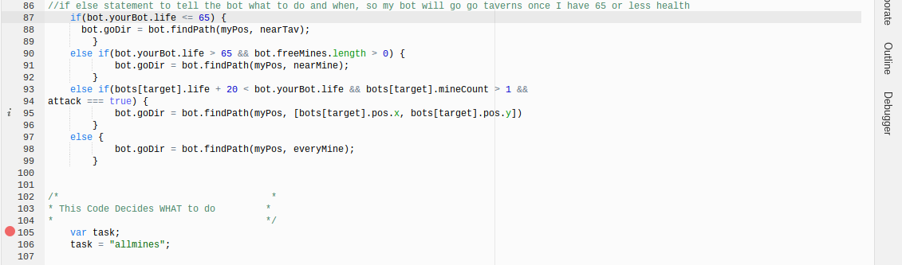
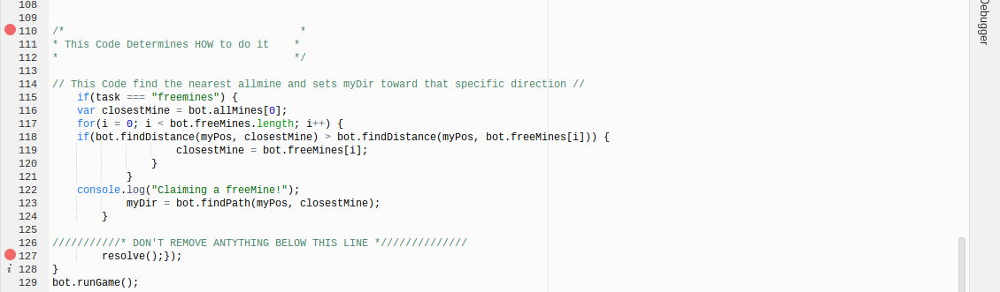
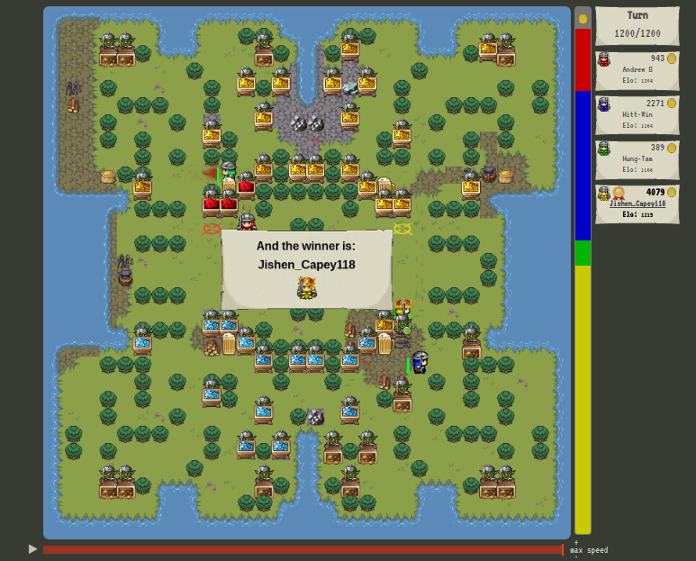

This shows the introduction of the Global Data section and writes myDir. There is a variable made called myPos which holds the x and y coordinates of my bot. Then Lines 29-35 This enemy bots array determines who the enemies are by asking if my bot is enemy bot 1, then going down the line. It then concatenates the enemy bots into an array called enemyBots so that it can be accessed later all together. This code makes an array for all of the mines called allMines. It has the position of the enemy mines in the lines 31, 32, 33, and 34. This code determines where the closest player is. This is used with other code (described later) to attack other players.
Part 2 of Code:

My code then looks for someone to attack and steal their mines. In this case, my bot is looking for the person who has more mines than everybody else, and then my bot will attempt to attack them and take their mines. It does that by first going through an if/else statement (lines 63-84) where it uses inequalities to check who has more mines that others, then changing a variable, ""target,"" to the coordinates of the bot that has more mines than others. Another variable is also, "attack,". If the person who has the most mines only has one mine, attack will equal to false, as it is not worth going after that person if it is only for one mine. Also if two people are tied for most mines, the attack will equal to false as well. To do this my if/else statement which tells my bot what direction it should go by adding another else if condition where if bot[target].life + 20 is less than bot.yourBot.life and attack = true. Then it will find the path to the bot with the most mines. Finally, if there is nothing else to do my bot will then just go towards the nearest taken mine and attempt to take control of it. It does this using a very similar for loop to the free mines one, except for taken mines, and simply just finds the path to the nearest taken mine if none of the other conditions are met, so if my health is not critical, there are no free mines to take, and there isn't a good opportunity to kill another bot for their mines, I will instead just work on stealing the opponents' mines.
What to Do:

My bot first checks its own life (shown in line 87) to see whether or not it needs to go to a tavern to heal up. The life I set it to go to a tavern is below or equal to 65, because in gaming 65 has always been my lucky number. This is done by having a for loop that takes an array of all the taverns, and uses an if statement to change the value of the variable nearTav to whatever the coordinates of the closest tavern is. It then goes through an if/else statement which first checks for a condition where bot.yourBot.life is less than or equal to 65, and if that is true. it takes the coordinates from the for loop and goes there using bot.findPath. After that when it makes sure its life is not in danger, it goes towards the nearest free mine to take for itself. This is done similarlly to the tavern function, except in the for loop it takes in an array of all the free mines rather than the taverns. Then in the same if/else statement, another else if statement is added where the condition is that bot.yourBot.life is more than 65 and bot.freeMines.length more than 0, and if that is true then the bot will go towards the nearest free mine. What bot.freeMines.length more than 0 does in the conditions is that if there are no more free mines, the bot won't look for a free mine
How to Do what code does:

This picture begins with the title of the How-to-do-it section. It also includes the freeMines task in an if statement. It says that if freeMines are running, then find the closest free mine and taken mine. It then compares the two and if the nearest taken mine is closer than the nearest free mine, it changes that to closestMine. Then it sends the bot to that position and makes the console (the description when you can't see the tv of the game) say, "Claiming a Mine!" This code basically says that if the task from the what-to-do section was "attack" it runs this. It sets myDir on the path towards the closest player, which was found in the closestPlayer array in the global data section. Then, it says, "Attacking!" in the console.
What I learned:

This was quite a tricky project for me, especially the first couple days. On the first day, I had absolutely no idea what I was doing and I was super confused, even when people explained how to do things. I first started understanding how it worked after our intellectual teacher, Mr. Hesby, did the attack function on the board and people could follow along and leard from what he was writing. This was very informative for me because I began to understand how the three sections could work together and how most of the sections (going to taverns, mines, or attacking people) aren't that different from each other. I don't and didn't really know what I wanted my bot to do, mostly because I didn't understand Vindinium at first, but once I understood a little, I knew that I surely had to make my bot be able to go to taverns, free mines, enemy mines, and to attack other players. I remember wanting my bot to be able to go to enemy mines, and I eventually learned how and did it, after some effort. As of right now I am feeling really satisfied with my bot, especially because of that fact that my bot can easily outmaneuver other bots (created by individuals such as Hung Tam and Kenson) that required over 5 times more time and effort to function than my bot!!!